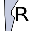
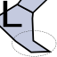
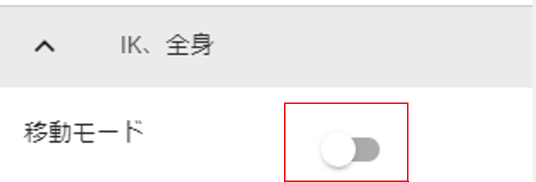

10.3. VRoid/VRM (1)
The main feature of this app is that you can read and take poses by reading VRoid/VRM, and you can enjoy the animation described below. I will explain a series of operations from reading VRM files to actual operation.
Caution
In this app, VRM1.0 models can also be read normally.
However, the functions that have been newly implemented in VRM1.0, such as constraints, have not yet been confirmed because the usage examples have not yet spread. We will proceed with confirmation and response in future updates.
10.3.1. Check the usage conditions of VRM
As the reading proceeds, the VRoid/VRM usage conditions confirmation screen will be displayed. If you read the VRM file of the creator other than yourself, check the terms of use and accept the” OK “button to complete the loading. please give me.

After this, the desired VRoid/VRM will be displayed on the WebGL screen.
Note
If you open VRM from history, you can skip this confirmation screen depending on your options.
VRoidStudio 1.x model and 0.x model have different joint shapes and initial poses. This app absorbs the difference as much as possible, but the initial display of IK in 11 and 13 on the next page will be slightly off in the model immediately after output from VRoidStudio 1.x (there is no problem if you start moving).
VRM 0.x models and VRM 1.x models also have different joint shapes, so the initial poses are slightly different. There is no problem if you start moving this as well.
10.3.2. About VRM IK markers
The imported VRoid/VRM has a semi-transparent figure called an IK marker as shown in the figure. Each part is linked to the movement of the next part. In addition, the type and shape of IK marker operations are determined for each part.
From version 2.12.0, IK markers have been added to the toes. The toes can only be rotated on the X-axis.

No |
Icon |
Part |
Corresponding operation |
No |
Icon |
Part |
Corresponding operation |
|
|---|---|---|---|---|---|---|---|---|
1 |
EyeViewHandle |
move |
2 |
Left/right tilt of the head / protruding chin (Head) |
rotation |
|||
3 |
|
Head orientation (LookAt) |
move |
4 |
|
Upper Body Orientation (Aim) |
rotation |
|
5 |
|
Left and right inclination of the upper body and shoulders (Chest) |
rotation |
6 |
|
Waist direction/tilt/movement (Pelvis) |
Move/Rotate |
|
7 |
Left shoulder |
rotation |
8 |
|
Left elbow (LeftLowerArm) |
move |
||
9 |
Left Hand |
Move/Rotate |
||||||
10 |
|
Right shoulder（RightShoulder） |
rotation |
11 |
Right elbow (RightLowerArm) |
move |
||
12 |
|
Right hand（RightHand） |
Move/Rotate |
|||||
13 |
|
Left foot direction (LeftLowerLeg) != Knee |
move |
14 |
|
Left ankle (LeftLeg) |
Move/Rotate |
|
15 |
 |
Right leg direction (RightLowerLeg) != knee |
move |
16 |
|
Right ankle (RightLeg) |
Move/Rotate |
|
20 |
 |
Left Toes (LeftToes) |
X-axis rotation |
21 |
Right Toes(RightToes) |
X-axis rotation |


Warning
IK system changes (ver 2.2.0)
In Ver 2.2.0, we changed the IK system from FinalIK to Unity’s original IK for future versatility. The impact of this is as follows.
Aim now operates the corresponding part of the VRM by rotating instead of moving.
Chests now operate the corresponding part of the VRM by rotating instead of moving them.
If you have greatly manipulated these IK markers in the previous pose/motion file, you will need to change the pose/motion. note that.
Warning
IK system changes (ver 2.4.0)
Part of the IK system was changed to make it behave in accordance with the actual VRM bone hierarchy.
flowchart LR Pelvis --> Aim --> Chest --> LeftShoulder & RightShoulder & Head
Moving Pelvis now also moves Aim, Chest, and Head.
When you move the aim, the chest and head also move.
Moving the Chest now also moves the Head.
- influence
Since the movement of the Aim’s x/z axes has been reversed, please correct the Aim’s rotation in the existing pose/motion file.
Although the IK markers themselves do not move in conjunction with each other in VR/AR space, the movement of the VRM bones is maintained as is.
Note
Even if you perform an operation that is not supported, that part will not move. In particular, the central parts of the body, Head(2), Chest(5), LeftShoulder(7), RightShoulder(10), Aim(4), can be operated even if they are moved far away. can do. Since it is a part that is easily hidden inside the body, it is a good idea to move it to a position that is easy to operate.
This is the only part that can be manipulated so that you can edit the pose as freely as possible without being complicated and troublesome. Therefore, it does not support FK (Forward Kinematics), which requires a huge number of operations.
There may be a strict way of saying this in the world, but in this app, each bone (part) above is described as an IK marker (part).
13 and 15 are not synonymous with knees. Think of it as the overall direction of your foot.
In order to support VR/AR, the shapes of IK markers 1, 2, 5, and 6 have been changed from ver 2.3.0. (If it is a sphere, it will be difficult to understand the state of rotation.)
10.3.3. Operation of each IK marker
Click each selected IK marker as shown. This is the operating handle.

- X, Y, Z axis movement
With green = Y, blue = Z, and red = X axis, dragging will move the IK marker in that direction. The corresponding part of the body also moves by the amount of movement.
- center plane
The square box in the middle with the same color can be moved freely on the axis indicated by the surface and the other axis by dragging inside it.
10.3.4. special operation
With an IK marker selected, you can use special functions by pressing the following keys:
- Ctrl-click IK marker
Multiple IK markers can be selected. You can move multiple body parts at the same time by moving or rotating with multiple selected. In addition, since the operation handle also has a collision detection, please select only the IK marker by zooming the camera.
- Press X key
Switch between global coordinates and local coordinates. Default is local coordinates.
- press G key
Move IK markers only.
- Press R key
Set the IK marker to rotation only.
- Press the T key
Returns the IK markers to their initial state. (Both movement and rotation)
- Press Shift + Z
Undo movement/rotation by IK marker.
- Press Shift + Y
Redo movement and rotation with IK markers.
10.3.5. Movement/rotation of VRoid/VRM itself
To move/rotate the selected VRoid/VRM itself, turn on “Movement mode” in the “IK, whole body” tab of the property on the right.
Then, when you click near the feet of the VRoid/VRM, all IK markers will be selected. Although it is not displayed, this is actually the entire IK marker.
Warning
Since the ankle and the overall IK marker tend to interfere, please switch to OFF when not moving.
From ver 2.3.0, this IK marker that moves the entire object is displayed as a trapezoid.

If you move or rotate up, down, left, or right in this state, the VRoid/VRM itself will move accordingly. This can also be set numerically from the “Common” tab of the properties.
10.3.6. Size of VRoid/VRM itself

You can also adjust the overall size of the VRoid/VRM from the common tab, but the ideal size of the VRoid/VRM is the size at the time of loading. We recommend that you do not change this ratio too drastically. (Because it does not follow the size of the IK marker itself, the position of the IK marker and the body part will be misaligned.)
10.3.7. Return all bones to T pose
If you mess with the IK markers too much and can’t return to the desired pose, you can return to the T pose (default pose) by pressing Reset all bones on the 3D model tab of the ribbon bar.

You can also reset the overall position and rotation with Reset Position and Reset Rotation.

10.3.8. Numerical manipulation of IK markers
In addition to manipulating IK markers with a mouse or touch, you can also manipulate them by entering actual numbers. Select the desired VRoid/VRM, and press the “IK position batch change” button on the “IK, whole body” tab of the properties on the right.

 Apply Pose button when you have finished changing the desired parts.
Apply Pose button when you have finished changing the desired parts.The function of each button is as follows.
Spreadsheet
Column name
Description
PositionX
X coordinate position
PositionY
Y coordinate position
PositionZ
Z coordinate position
RotationX
X-axis rotation
RotationY
Y-axis rotation
RotationZ
Z axis rotation
drag
Drag when moving IK markers
angularDrag
Rotational drag when moving IK markers
- Refresh
Reflects the pose information of the currently selected VRM in the spreadsheet. Basically, if you select it, it will be automatically reflected, but the information may remain old depending on the operating state of the application. Use it in that case.
 ポーズを反転する
ポーズを反転するSwaps the left and right of the current pose information. If you press Apply Pose in this state, the current pose will be reversed. This button is also present in the IK, Whole Body panel.
Note
The buttons in the toolbar will be disabled while selecting anything other than VRM.
The number here is the current value of VRM. Since the height and physique difference are not reflected, it is necessary to manually calculate when reused with other VRM.
10.3.9. Using Easy IK Mode
Introduced in ver 2.13.0. This is a function that is only available for VRoid/VRM, but you can easily make your character take various poses by simply selecting your favorite movement from 6 different body parts.
Clicking the button next to this will display a window.
PC to Phablet |
Smartphone |
|---|---|
|
|


The key points in this feature are:
- 6 parts:
It uses six types of parts: posture, gaze, right arm, left arm, right leg, and left leg. If you do not select any part, no IK markers will be changed. These parts have an order in which they are applied as poses.
posture
Line of sight, right arm, left arm, right leg, left leg
Posture is the most important part. It controls multiple upper body IK markers, including Pelvis and Aim.
In addition to the movements of the posture, the gaze, arms, and legs also move.
Hint
On the screen, the order of the line-of-sight and posture combo boxes has been swapped to make it easier to understand the arrangement of VRM bones.
- How to move:
It’s about how the six parts move.
Note
From version 2.15.0, the combo boxes for the arms and legs are now separated into left and right.
- Sample data:
This app provides several movements for six different body parts.
- Starting with the T-pose:
Normally, each movement is applied based on the bone information of the current pose. If you check this box, the bone information of the T-pose will be used as the starting point.
When this is enabled, each part of the body will move in exactly the same way, making it easier to recreate the same pose.
10.3.9.1. Method of operation
- Apply as a pose
The six parts are combined to create a pose.
Select VRM.
From the properties panel on the right, open the
IK, Full Bodypanel and click .
.Select your preferred movement from the Posture, Gaze, Arms, and Legs combo boxes.
Press the
Applybutton on the left side of the toolbar.
Note
Selecting
---at the top of each part will not move anything.The values will change by a percentage depending on the formula for calculating the
position and rotation change valuedescribed below.If you uncheck
Use T-pose as starting pointand apply the same movement multiple times, the pose may change rapidly.
Hint
After applying a pose, you can save it as an app pose so you can quickly use your favorite poses later.
- Revert to default movement data
Click the button on the toolbar. Load the URL of the sample CSV in the settings and restore the data to its original state.
- Reacquire the current bone information
Click the button on the toolbar. Generally, it will be automatically reloaded after applying, but you can use this if you want to get it manually, such as after switching VRM.
- Deselect
Press the button on the toolbar. Clear all selections in the four part combo boxes.
10.3.9.2. Prepare your own data
- Prepare your favorite moves
If you prepare a CSV file in the following format, you can load it into this app and create your own unique movements.
Once you have prepared a CSV file in the format below, press the button on the right side of the toolbar to open the file.
- File formats:
Tab-delimited UTF-8 file
- Sample CSV for the app:
You can download it directly from Google Drive.
csv-columns kind
name
lang
use_TPose
IK Marker Label
…
0
right hand up
ja
0.10293
…
The column names can actually be anything, it’s the order of the columns that determines their functionality.
Column number
Meaning
Description
1
Part Index
0 - Posture 1 - Line of sight 2 - Left arm 3 - Left foot 4 - Right arm 5 - Right foot
2
Name of the movement
I will write a brief explanation.
3
language
ja - Japanese en - English eo - Esperanto. You can show or hide the behavior depending on the UI locale. If left blank, it will be displayed in all locales.
4
Use a T-pose
1 - Use Other than 1 - Do not use. Forces
T-pose as originon the window to ON. This option is only available for postures5~
Position and rotation changes
All columns from the 5th onwards will be used for this purpose, see below.
Note
The part index and the IK marker that actually moves are not linked. So, for example, you can create a CSV that moves all IK markers by posture.
In the sample data, we have intentionally limited the number of IK markers that move to make it easier to visualize the moving parts.
- Position and rotation changes
When writing in CSV, from the 5th column onwards, please write the change values for each IK marker’s position and rotation axis.
The order of the columns is the order of the IK markers listed in About VRM IK markers.
And for each IK marker, they are arranged in the following order:
[IK marker name]_pos_x - X axis position
[IK marker name]_pos_y - Y axis position
[IK marker name]_pos_z - Z axis position
[IK marker name]_rot_x - X axis rotation
[IK marker name]_rot_y - Rotation on the Y axis
[IK marker name]_rot_z - Z axis rotation
The possible values are:
- —:
No change. Uses the previous bone position and rotation as is.
- Direct Value:
Specify a value directly, such as 0.25 or -0.2934. For rotation, specify the angle.
- IK Marker Label:
You can reference the position or rotation of another IK marker like a variable and use it in a formula.
For the names of IK markers, see About VRM IK markers. Specify the label in the following format:
Position -
[IK marker name]_[pos]_[axis]Rotation -
[IK marker name]_[rot]_[axis]Specify the axis as x, y, or z.
Example
Pelvis_pos_y * 1.5(LeftLowerArm_pos_x + LeftHand_pos_x) * 0.5RightHand_rot_x + 45
Hint
When you use an IK marker label, the referenced value is the position and rotation value of the previous bone. In other words, it looks like this:
Posture - T-pose or current pose bone information
Line of sight - Bone information after applying posture movement
Arm - bone information after applying eye gaze movement
Bone information after applying leg-arm movement
Of course, if you do not select a part combo box, the bone information after application of the previous part will be used.
Caution
Since certain IK markers are local coordinates from the parent IK marker, their position and rotation may be significantly distorted even if they are referenced as is.
The X/Y/Z coordinates of Head, Chest, Aim, LeftShoulder, and RightShoulder are not useful as they are. Use the values multiplied by 0.1. (Example:
Pelvis_pos_y + (Aim_pos_y * 0.1)= Aim’s Y position)Since the Head, Chest, LeftShoulder, and RightShoulder move at the same time as the Pelvis moves, assigning values to pos_x, pos_y, and pos_z will have no effect.
10.3.10. Adjust the restrictions of the movable range
- Lowerleg, the rotation angle of the X -axis of the ankle (Leg), the rotation angle of the elbow of the elbow (LowerArm)
The range of the rotation of the ankle, below the knees, the range of the ankle rotation is limited according to the actual human body.
It can be turned on/off by selecting “Model tab” → “Apply natural movement control to VRM’s body” on the setting screen.
- Rotation of the X -axis of the ankle (Leg) after moving the direction of the foot
When the legs (LowerLeg) are moved back and forth, rotate the rotation angle of the ankle (Leg) according to LowerLeg.
It can be turned on/off by selecting “Model tab” → “Automatic ankle rotation” on the setting screen.
10.3.11. Interlocking between IK markers
- The following 3 patterns linked
- Near shoulder (chest) / arm (Lowerarm) / head (head)
When the chest is moved, move the X -axis of the arm (Lowerarm), the head (head), and the Z axis as much as possible.
- Aim and shoulder (Chest)
When the AIM is moved, the X -axis / Z axis near the shoulder (Chest) is moved as much as possible.
- Pelvis and legs (LowerLeg)
When the waist goes up and down, the legs move slightly back and forth according to their movements.
- Interlocks between the ankle (LEG) and the direction of the foot
Lowerleg slightly moves back and forth when you move your ankle
- Interlocking Hand and Lower Arm
When moving the hand, the arm (elbow) also moves
Hint
It can be turned on/off by selecting “Model tab” → “Bone linkage” on the setting screen.
Warning
The interlocking problem that was present at the time of ver 1.x has been solved in Ver 2.0.2.
It turns off automatically during animation playback, and the position and rotation registered in the keyframe are reflected.
If you turn it off, it will not be linked and you will be free, but the joint will bend in a direction that should not be bent.
10.3.12. Switch IK markers to different objects

Select an IK marker site and select an object to assign to that site. Selectable objects are:
Note
Caution
Each VRM’s IK automatically reverts to default if you delete the object you’re assigning it to.
** VRM A and VRM B, and when effect objects **

If you move the effect object in this state, the character A and B will turn around in that direction and look at them.
This setting and state can be reflected in the animation. Registering in the animation project is the following:
Object |
Operations to register |
|---|---|
VRM |
IK marker assignment |
Assigned object |
Actual movement, rotation, etc. |